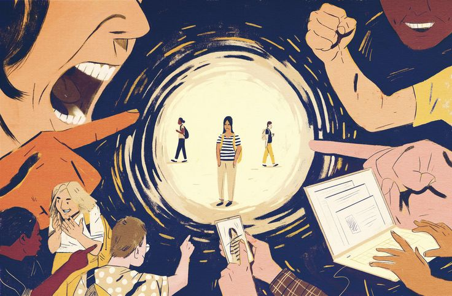

Jenis-Jenis Bullying
ditulis pada tanggal 8 September 2023 oleh Zuraa.
Bullying adalah suatu tindakan atau perilaku yang dilakukan dengan cara melukai secara fisik, verbal atau emosional / psikologis oleh seseorang atau kelompok yang merasa lebih kuat kepada korban yang secara fisik atau mental lemah berulang kali tanpa perlawanan untuk membuat korban menderita. Berikut Jenis-jenis bullying :
1. Bullying Verbal
Penindasan dalam bentuk verbal adalah penindasan yang paling sering dan mudah. Bullying biasanya merupakan awal dari perilaku bullying lainnya dan dapat menjadi langkah pertama menuju kekerasan lebih lanjut. Contoh-contoh penindasan verbal meliputi: nama panggilan, mencela, memfitnah, kritik kejam, penghinaan, pernyataan pelecehan seksual, teror, mengintimidasi surat, tuduhan palsu, tuduhan yang kejam dan salah, gosip, dll.
2. Bullying Fisik
Penindasan paling mudah terlihat dan mudah diidentifikasi, tetapi insiden bullying secara fisik tidak sebesar penindasan dalam bentuk lain. Remaja yang secara teratur melakukan bullying dalam bentuk fisik sering menjadi remaja yang paling bermasalah dan cenderung pindah ke tindakan kriminal lebih lanjut. Contoh-contoh intimidasi fisik adalah: memukul, menendang, menampar, mencekik, menggigit, menggaruk, meludah, merusak dan menghancurkan barang-barang milik anak yang tertindas, dan lainnya.
3. Bullying Relasional
Bullying relasional dilakukan dengan memutuskan hubungan sosial seseorang dengan tujuan melemahkan harga diri korban secara sistematis melalui pengabaian, pengucilan, atau penghindaran. Penindasan dalam bentuk ini paling sulit dideteksi dari luar. Contoh-contoh bullying relasional adalah perilaku atau sikap tersembunyi seperti pandangan agresif, pandangan mata, mendesah, mencemooh, mencemooh tawa dan mengejek bahasa tubuh.
4. Bullying Elektronik
Bullying elektronik adalah bentuk perilaku bullying oleh pelaku melalui sarana elektronik seperti komputer, telepon seluler, internet, situs web, ruang obrolan, email, SMS, dan sebagainya. Biasanya dimaksudkan untuk meneror korban menggunakan tulisan, animasi, gambar dan rekaman video atau film yang mengintimidasi, melukai atau menikung.
About Me

Haiii semuanya, kenalin aku Zuraa penulis dari artikel dozu.com. Aku sangat suka mendengarkan musik. Mulai dari musik Barat, K-pop, dan Indonesia.